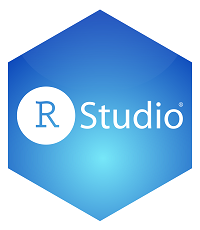
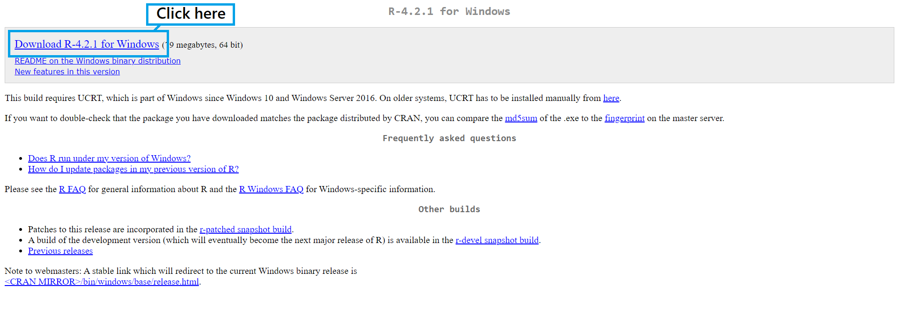

Introduction to Data Science
Click Here for Suplimental Videos
Course Outline:
The purpose of R Bootcamp is to be able to read, wrangle, and visualize data using R in RStudio. By the end of the course you will be able to contribute to a society project next semester.
What is Data? Which Kind of Data Are We Going to Use?
We will be working with tabular data (think excel files; rows and columns). Other data includes pictures, videos, and audio.
Downloads
Downloading R
First Option:
Google “download R” or go to this link to download it. The page should look like this.
Second Option:
Use this direct R download
Downloading RStudio
First Option:
Google “download RStudio” or go to this link to download it. The page should look like this.
Second Option:
Use this direct RStudio download
